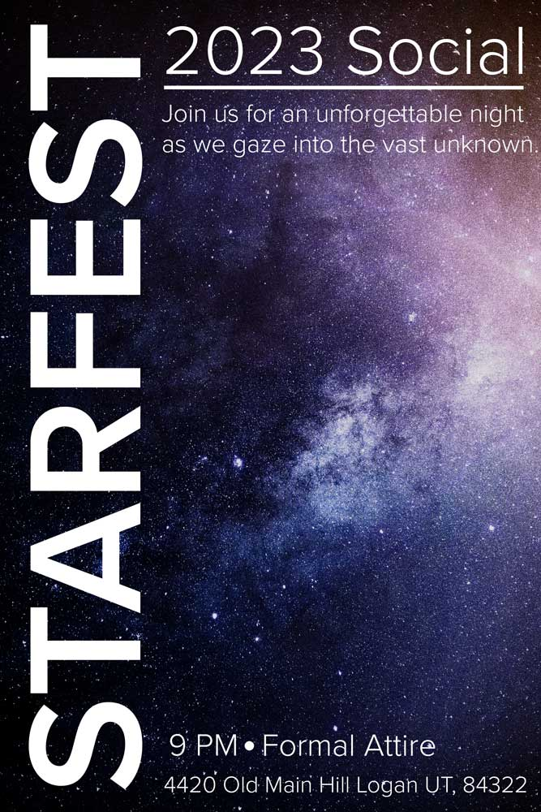

This page is dedicated to all the images I have created in my Graphic Design course(s) here at Utah State. Each image was edited in Adobe Photoshop.
For this piece, I wanted to utilize the paintbrush tools inside of Adobe Photoshop to make the image appear as if it were painted.
For this image I set out to create a unique piece that utilized various overlays, blending modes, and layer adjustments. This is one of my favorite pieces I have ever created.

I decided that I wanted to create a flyer to fit this image of space that I found on Unsplash. I wanted to practice using contrast and repitition to create an appealing flyer.
I felt inspired by this image that I took on a trip to Hawaii, so I created this postcard. I utilized auto-fill tools to remove bystanders and clutter, leaving me with a picture-perfect beach scene.
I wanted to add a touch of a bokeh effect to these lights, and make the image feel more dynamic and visually interesting.